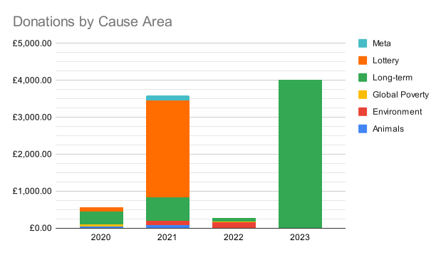

For small donors, I currenly think that the best place to give, absent matching schemes, is to a donor lottery, like the one that Giving What We Can is currently running. This is because, assuming that you're risk neutral (which you probably should be, if you're a small donor and hence are donating a small amount compared to the amount dedicated to optimising in your cause area), there's only upside: at worst you'll donate the same expected monetary amount to wherever you were going to donate, and you can also spend time evaluating where to donate to find somewhere even better. Given that there is increasing marginal utility from it being optimal to spend more effort evaluating with a larger bankroll, the largest donor lottery (up until one starts hitting significant diminishing returns) is the best to give to.
On the object level, because "Donor Lottery" is somewhat of a copout and passing the buck, I'm not so sure where to give. I think giving to the Machine Intelligence Research Institute (MIRI) might be a good idea; I think that, if there are alignment plans that have a large amount of hope, MIRI would be able to notice them, and merge and assist towards that; and otherwise I don't expect MIRI to spend money on things that are alignment-themed but that they don't think would help.
The following is a list of every charitable donation I have made, as of the last donation listed, along with the reasoning behind it, so that you too can maximise utility. Each amount donated has been scaled so that the area covered by the number roughly corresponds to the amount, in the interests of scope sensitivity.
| Date | Organisation | Cause Area | Amount | Explanation |
|---|---|---|---|---|
| 2020-09-30 | Long Term Future Fund | Long-term | £50.00 |
First regular donation. This was made to be about 2% of my income, because in the US 1.44% of GDP goes to charity and I didn't want to be less charitable than the average person and call myself an EA even when I was considering whether to go for a full 10% Try Giving pledge. I chose the Long Term Future fund because their focus of existential risk, primarily from unfriendly AI with a lesser focus on artificial pandemics, is the object-level cause area with the greatest marginal impact. This fund hence mostly shares my goals, but is able to donate a larger pool of money and spend more time evaluating the most effective places to grant it to. I was also guided by 80,000 Hours' 2018 talent gaps survey, in which the median respondent from a survey of EA leaders guessed that donations to the Long Term Future were 167% as impactful as donations to the EA Infrastructure fund. |
| 2020-09-30 | Long Term Future Fund | Long-term | £50.00 | |
| 2020-11-11 | Against Malaria Foundation | Global Poverty | £18.75 |
@ellegist on Twitter pointed out that if everyone reading the silly little games donated £15, then many malaria nets could be provided. I was reading those silly little games so I donated £15. |
| 2020-11-18 | Long Term Future Fund | Long-term | £200.00 | |
| 2020-11-20 | GiveWell | Global Poverty | £25.00 |
@antirobust on Twitter got invited to a donors-exclusive online event, and I wanted in on it. I actually don't think this donation actually got me invited to any of them. |
| 2020-11-25 | Donor Lottery ($20,000 block size) | Lottery | £12.50 |
At this point, I'd read some arguments in favour of the donor lottery, though I wasn't totally sold on the prospect that it was the best place for small donors to give to. This tiny donation was something of a testing the waters, to see if I could feel motivated by buying a tiny chance of allocating a pool. |
| 2020-11-30 | Long Term Future Fund | Long-term | £50.00 | |
| 2020-12-01 | GiveDirectly | Global Poverty | $25.00 |
GiveDirectly was matching donations to its Remote Liberia Program, and I wanted to show a little support, especially since @decadantism on Twitter was so nice as to raise it to my attention when I was making a thread of 2020 year-end matching opportunites (sidenote: it seems from looking at my donation history that people can get me to donate like £30 to a global poverty charity just by asking me to. I hope all readers will use this power over me only for good). |
| 2020-12-02 | Machine Intelligence Research Institute | Long-term | $10.00 | every.org offers $25 charity giftcards, redeemable after donating $10. I made this out to MIRI as a default inoffensive longtermist organisation. |
| 2020-12-15 | The Humane League | Animals | £32.81 | The Humane League was running a pretty impressive 3× match for the end of 2020. |
| 2020-12-18 | Donor Lottery ($20,000 block size) | Lottery | £50.00 |
Some more waters-testing on the donor lottery, which I was kind of sold on at this point but not enough to stake a huge amount of money on being the best place to give. |
| 2020-12-22 | Donor Lottery ($20,000 block size) | Lottery | £50.00 | |
| 2021-04-24 | Long Term Future Fund | Long-term | £650.00 |
I decided to aim for the full 10% Try Giving pledge at this point; this donation took me up to 10%. |
| 2021-07-12 | Climate Change Fund | Environment | £125.00 |
At UK levels of carbon intensity, 1 day of income is about enough to fund sequestration or emissions reduction of one’s yearly CO2 emissions ($38k gdp per capita, one day of which is $100, 6 tons means $15/ton, which is about offset costs). Since, if everyone donated enough to avert their carbon emissions, global warming would be solved, I donated about a day worth of my income to reducing the amount of carbon dioxide in the atmosphere. A tentative name for this if I generalise it into a campaign is #AllInADaysWork Since this was deliberately made as an offset, I do not count this towards my 10% Try Giving pledge for 2021. |
| 2021-11-18 | The Document Foundation | Non-EA | $19.00 |
I use LibreOffice as my desktop document editors of choice. Since I think people shouldn't be poor if they are nice enough to make software free (as they should), I donated a standard anchoring amount when they asked me to when I updated it. Since this was not made with the goal of producing the maximum amount of utility, I do not count this towards my 10% Try Giving pledge for 2021. |
| 2021-11-21 | Center for Effective Altruism | Meta | $100.00 |
Between April and October, I become more intuitively aware of the heavy-tailed-ness of effective altruism, especially given the coninued rise of Sam Bankman-Fried, who in April had $9 billion and in October had $23 billion, all pledged to eventually be doned to effective altruism. At the end of July, Benjamin Todd estimated that effective altruism had a net present value of total commited funding of $46 billion, about half of which was one guy (Dustin Moskovitz), and about a third of which was one other guy (Sam Bankman-Fried). It seemed to me like the most impactful thing to do was to get more such guys on board with effective altruism. In response, I threw up my hands and resolved to give to the Donor Lottery, and to think very hard about the issue if I won. In November, every.org offered a doubling of donations of up to $100 for any organisation on its list. The Center for Effective Altruism has a track record of incubating important effective altruist projects that help with getting more people on board, such as EA Funds and the Donor Lottery (which I have donated to), as well as 80,000 Hours which worked with SBF earlier in his career, and so I guessed it would be at least half as effective as whatever I would eventually decide to grant to if I was chosen to allocate a future Donor Lottery pool. |
| 2021-11-10 | Founders Pledge | Meta | $100.00 |
This donation was also to make use of every.org's donation matching event. Founders Pledge, as an organisation intented to facilitate giving among high-net-worth people and get them on board, seemed like plausibly it was also working in the long-tailed distribution that contains potential billionaire EAs and hence I guessed it would be at least half as effective as whatever I would eventually decide to grant to if I was chosen to allocate a future Donor Lottery pool too. |
| 2021-11-27 | Donor Lottery ($2,000,000 block size) | Lottery | £2,619.46 |
And thus we reach the donor lottery, where I donate what is needed to make up a total of 10% of my income. This gives me a 0.174% chance of winning. Hopefully, someone exactly aligned with my values who is not me wins 😜. I think that a donor lottery is the optimal place to give because, assuming that you're risk neutral (which I should be, because total meta funding is $26,000,000/year according to Benjamin Todd's estimates, much larger than what I am giving, so I'm unlikely to hit diminishing returns), there's only upside: at worst you'll donate the same expected monetary amount to wherever you were going to donate, and you can spend time evaluating where to donate to find somewhere better. Given that there is increasing marginal utility from it being optimal to spend more effert evaluating with a larger bankroll, the largest donor lottery (up until one starts hitting significant diminishing returns) is the best to give to, so I decided to give to the $2,000,000 one. |
| 2021-12-12 | Animal Welfare Fund | Animals | £75.00 |
UK per capita meat consumption is 32 kg poultry, 25 kg pork, 18 kg beef, 4 kg mutton, 1 kg other land animals (relevant OWID graph), and 20 kg fish (relevant OWID graph), for a total of 32×-40 + 25×-30 + 18*2 + ~5×-20(?) + ~20×-100(?) = about -4000 welfare points (relevant EA forum post) per year, which is about -5000 per non-vegan adult. 1 chicken life = 2 kg chicken = -80 welfare points, so saving 60 chickens offsets this. This donation is about the estimated cost to save that many animals. If everyone did this or became vegan, there would be no more factory farming; I am not yet vegan, so I am doing this. Since this was deliberately made as an offset, I do not count this towards my 10% Try Giving pledge for 2021. |
| 2022-07-18 | Climate Change Fund | Environment | £147.24 |
Climate change offsets for 2022, same reasoning as before. Also I was frustrated because the weather was really hot, and if everyone does this then the weather would be normal. As in, sometimes hot anyway. Nevertheless. Since this was deliberately made as an offset, I do not count this towards my 10% Try Giving pledge for 2022. |
| 2022-10-10 | GiveWell | Global Poverty | £31.25 |
@mealreplacer on Twitter told me to if I smiled at the meme, and I did indeed smile at the meme, so I donated. |
| 2022-11-01 | Machine Intelligence Research Insitute | Long-term | $50.00 |
every.org was running a 2× match for monthly donations made in November and December. I made the donation to MIRI because they're trying different things that are trying to aim directly at the heart of the alignment problem which I have become more concerned about this year; this year and the last they've been sharing their models of alignment due to being in somewhat of a rut after their main research direction didn't pan out, which isn't too much of a knock on them because no research directions are panning out; see the 2022 MIRI Alignment Discussion posts and the 2021 MIRI Conversations. Possibly CEA might be better, though I haven't estimated the flowthrough funding specifically towards well-aimed alignment research that tries to be something that scales up to superintelligences from attracting large donors. |
| 2022-12-01 | Machine Intelligence Research Insitute | Long-term | $50.00 |
Part two of my monthly donation to make use of every.org's matching funds. |
| 2023-01-05 | Machine Intelligence Research Insitute | Long-term | £4,010.43 |
I pledged to donate 10% of my income in 2023; this makes up the rest of that amount. It's to MIRI, rather than to the donor lottery, because I was split between them and it seems that MIRI is efficient with respect to the alignment community, in the sense that if there's some avenue that has a large amount of hope, MIRI would be working on that. One reason you might not give to a donor lottery is if the overhead of a donor lottery isn't worth the additional benefit, and I don't strongly expect looking to find something reliably better than MIRI that MIRI itself can't find, or if they think they might be unhappy if they lose the lottery, and when considering giving to MIRI or to the Donor Lottery the Donor Lottery did feel somewhat unsatisfying. |
Chart of my donations by cause area and date, up to 2023-01-09.
